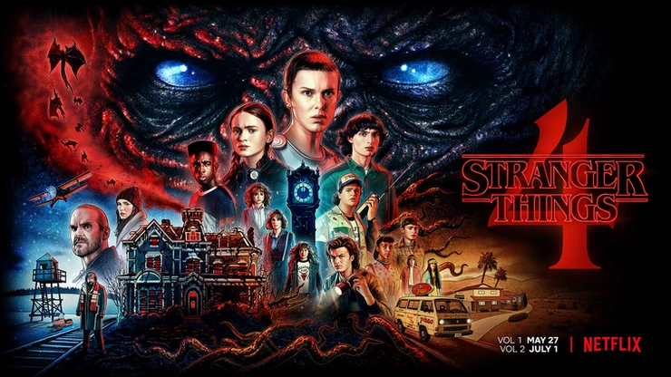
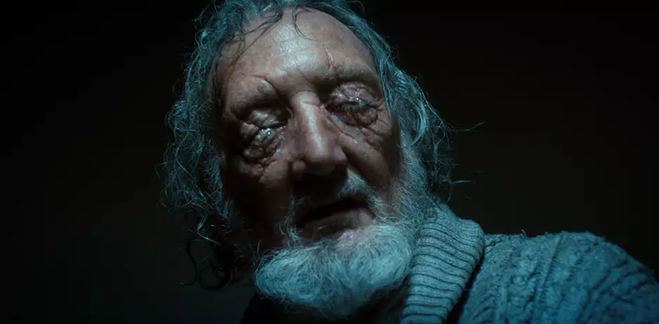
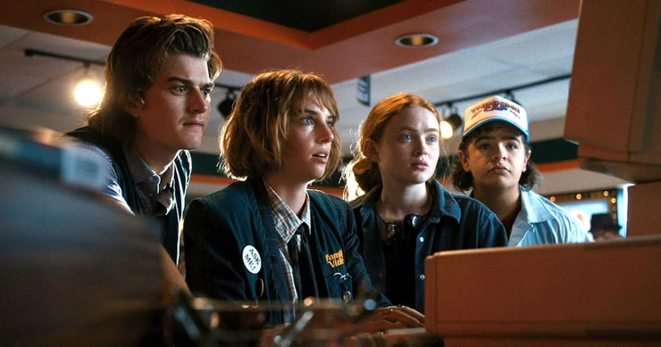

Crítica de Stranger Things 4 Volume 1
Autor(a): Giovana Tavares | Túlio
Data: 02/06/2022

Uma das séries mais populares da Netflix teve mais uma temporada lançada.
Diferente do que tivemos nas temporadas passadas, aqui tivemos uma divisão em duas partes, a primeira pudemos ver no último dia 27 com os 7 primeiros episódios e em 1º de julho teremos outra parte com os dois últimos, com um deles com mais de 2 horas de duração.
Pensando nessa divisão, decidimos apresentar duas opiniões sobre o Volume 1 da série. Dois críticos do nosso site, decidiram defender visões distintas sobre a mesma série, onde um representa o lado positivo da obra dos irmãos Duffer e o outro será o lado invertido.
Será que essa temporada está boa e vale toda essa empolgação?
Quando foi anunciado o tempo da série, posso dizer que fiquei com um pouco de medo de ser entediante a longa duração, saírem do controle e perder a originalidade da série. Mas felizmente, posso dizer que ela não é ruim.
A trama está muito bem amarrada, você vai descobrindo as coisas e isso te faz querer assistir mais episódios. O que favorece é a ambientação dos anos 80, com suas referencias a filmes e jogos oitentistas,
as músicas foram muito bem escolhidas e foi muito bom ver que Kate Bush voltou ao top 5 mundial, com uma música lançada há 37 anos.
Alguns estão bastante maçante, como o do Hopper e Joyce que você não entende muito bem como que eles vão entrar na trama da série por ser uma parte distinta, desenvolvida em paralelo.
Mas aos poucos você passa entender e perceber como isso deu abertura para outros personagens, como é o caso da Max que teve bastante tela nessa temporada e é algo que ninguém esperava, mas que ficou impecável.
O Mike e Will estão praticamente irrelevantes no momento e Eleven está bem afastada dos holofotes, o que não é ruim já que a trama está desenvolvendo caminhos paralelos, para unificar nos dois últimos episódios. Os efeitos especiais estão muito bons, tudo no momento certo e nada muito grotesco, até o cgi da Eleven criança quase não faz diferença, você só percebe uma vez; o figurino e maquiagem, tudo muito bem pensado, principalmente nas cenas do Vecna. Que foi um acerto no vilão, trouxe um terror bem mais pesado do que apresentado anteriormente, e ainda tem o lado psicológico que criou margem para aprofundar as camadas dos personagens, em específico a Max no episodio "Dear Billy" ou "Querido Billy" aqui no Brasil. Por fim o plot twist explodiu minha cabeça ao conectar tudo, mal posso esperar pela parte 2.

Muitas subtramas enfadonhas, arcos desnecessários, personagens chatos e piadas sem graça. Essa com certeza, é uma temporada bem problemática quanto a ritmo, edição e subtramas. Algumas vem e vão e não acrescentam na principal, algumas logo são finalizadas (ou descartadas), outras perduram, entrando no segundo problema, a edição.
Os longos arcos mal dirigidos de personagens, antes protagonistas, que agora só "enchem linguiça", atrapalham no andamento dos arcos decisivos, desenvolvendo momentos com piadas ridículas e forçadas, como o arco da Joyce/Xerife e do Will, com uma tentativa de discussão sobre sua sexualidade, que não sai do ponto morto.
Will, meu deus, acabaram com Will. Em mais de 7 horas de temporada o protagonista não tem nem 10 minutos de tela. Will, Mike, Jonathan e seu amigo, estão apegadíssimos. Se morressem estaria tudo ok.
Eleven chata, com um arco bem enfadonho, que até o inicio do sétimo episodio, é um clichê sem fim de: donzela indefesa, vítima de bullying pela popular, que descobre ser a chave para sobrevivência da raça humana etc. A Atuação da Millie se resume a intercaladas cenas de choro, grito e silêncio. Apenas nos últimos minutos,
toda a relevância da personagem começa a aparecer, a se tornar palpável. Porque, até antes disso, não dá para se importar com ela.
O que puxa a outros personagens, velhos e novos. Dustin é o melhor personagem da série, de longe, carismático e decisivo. Dustin & Cia salvam a empolgação de continuar assistindo. Ele é o único que usa a cabeça desde a primeira temporada. Sua equipe está ótima, com destaque para a Max, além da inserção do Eddie, bem acertado. O arco da Joyce é péssimo, sem graça, emula totalmente o já batido Viúva Negra. Algumas cenas isoladas são ótimas, mas, poucas. Os últimos 30 minutos do sétimo episodio são excelentes, nem parece que fazem parte do desastre de edição que foi essa temporada. Mas diferente do que vinha esperando, Hawkins não se tornou um "personagem", como Derry, em IT. Na verdade, está longe disso. Ao menos , a trama principal ganha um desfecho extremamente favorável, no terço final do sétimo episodio. Por fim, a temporada está recheada de referencias e tentativas de reprodução (copiar mesmo) de cenas icônicas do terror setentista e oitentista.

Os episódios oito e nove terão, juntos, quase quatro horas de duração. O tempo será necessário, já que o volume 1 nos deixou com muitas portas abertas e assuntos não resolvidos.
E Você, já assistiu a série? Conta para a gente sua opinião também. Qual é o seu lado, o positivo ou invertido?
Você tem alguma teoria sobre o desfecho dos personagens?
4/5
2/5